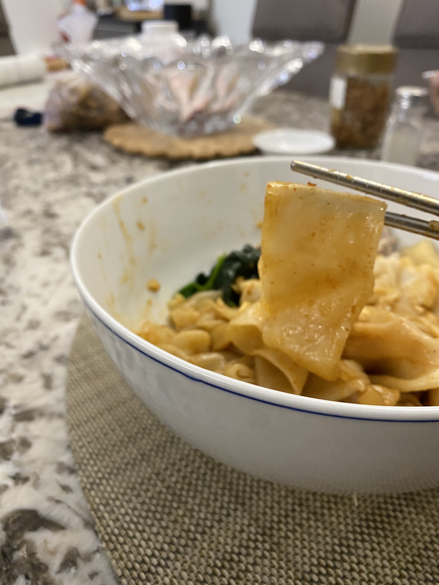
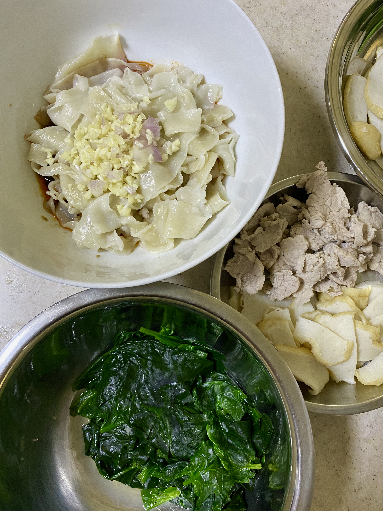

Biang Biang Noodles

A delight for the senses, this classic Shanxi dish serves a kick with each spoonful of "QQ" noodles.
These noodles was onomatopoeically named after the sound the noodles make when chefs slap them against the table to lengthen the strips of dough into noodles. Drenched in a sauce made from soy sauce, vinegar, and peppercorns, this sour and spicy dish is enough to leave you wanting for more!
Serves: 2 pax
Adapted from: China Sichuan Food
Ingredients
(Increase amount of ingredients according to number of servings required.)
For the noodle dough:
- 300g All-Purpose Flour
- 2g Salt
- 130ml to 140ml Water
- Oil for brushing
For the noodle sauce:
- 2 Tbs Peppercorn Oil
- 1 Tbs Garlic Oil
- 1 Tbs Sesame Oil
- 2 Tbs Light Soy Sauce
- 2 Tbs Black Vinegar
- 2 Cloves of Garlic
- 2 Green Onions
(Optional) Toppings for the noodle:
- 1 Slab of Fishcake (100g)
- 150g of Vegetable of Your Choice (e.g., Spinach, Bak Choi, etc.)
- 100g Pork, Thinly Sliced

Steps
For the noodle dough:
- Mix the flour with salt, and slowly add the water by batches. Knead until smooth, then cover with a cling wrap over the bowl and set aside in fridge. The amount of water added will affect its "QQ-ness"; the less water added, the bouncier the texture of the noodles.
- Knead the dough again for a few minutes until the surface becomes smooth. Let the dough rest for another 15-20 minutes.
- Brush a plate with some oil to place the dough. Half the dough, and further divide each half of dough into six pieces. Brush the dough pieces with some oil. Cover with cling wrap and let the dough rest for another hour.
- Dust your working table with some flour so that the dough does not stick to the table. Take one piece of dough and roll the dough out into a rectangle. Make an indent with a chopstick down the center to make two smaller rectangles. With each of these rectangular pieces, hold both ends of the noodle strip with one hand each and gently slap the dough against the table. Once the noodle strand is sufficiently stretched out, lay the strand to cook later. Repeat this step until all the dough have been slapped.
Cooking the noodles:
- Mix the ingredients for the noodle sauce together and set aside.
- Slice the fish cake. Blanch the vegetables for a few minutes (depending on the type of vegetables - the spinach only took 1 minute). Blanch the pork slices for a 5 minutes until cooked. Set them aside.
- Add boiling water to a cooking pot. Add the noodles into the boiling water. Cook the noodles for about 5 minutes or however long it takes for it to float.
- Drain the noodles with a colander. Add cold water to the noodles.
- Separate the noodles into two bowl. Pour the sauce prepared in Step 1 and mix well.
- Place the fishcake, vegetables, and pork slices on the noodles.
- Garnish with spring onions and/or coriander and enjoy!